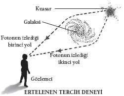

Tahmin edilemez derecede heyecan verici kuantum bağlantıları ve tarihi yeniden yazma fırsatı
Einstein bu soruyu biraz farklı bir biçimde yöneltmişti. 1950’lerin başında, genç fizikçi Abraham Pais’ye dönüp kaşlarını kaldırarak sormuştu: “Ay’ın sadece ona baktığında var olduğuna inanıyor musun?”
Einstein, son 20 yılını kuantum teorisinin öncüleri karşısında giderek daha büyük bir hayal kırıklığı duyarak geçirmişti. Kuantumcuların elebaşı Niels Bohr kurama içkin olan tuhaflığın, örneğin atomların aynı anda iki yerde birden olmasının ya da sonuçların nedenlerden önce belirmesinin, bir şeyin –Ay’ın bile– ancak ölçüldüğünde, yani gözlemlendiğinde gerçekten var olduğu şeklinde açıklanabileceğini iddia ediyordu.
Einstein’ın Pais’ye yönelttiği soru sağduyuya bir davetti, rahatsızlıktan kaynaklanıyordu. Ay gibi kocaman ve daimi bir şeyin binlerce mil ötedeki küçücük bir insan gözlemcinin insafına kalmış olabileceği fikri anlamsızdır. Kuantum kuramının 20. yüzyılın başlarında gelişmesiyle birlikte, saçmalık üstünlük haline geldi. Pais, hatıralarını anlatırken Einstein’ın geçmişe neden bu kadar takılıp kalmış olduğunu merak ettiğini söyler. Einstein’ın biyografisini kaleme aldığı Subtle is the Lord başlıklı kitabında, “Modern fiziğin yaratılmasına hiç kimseyle kıyaslanamayacak kadar katkıda bulunmuş bu adam 19. yüzyıldaki nedensellik kavrayışına neden bu kadar bağlı?” diye sorar.
<>
“Ay’ın sadece ona baktığında
var olduğuna inanıyor musun?”
ALBERT EINSTEIN
<>
18. yüzyılda bile insanlar gerçekliğin doğasını sorgulamışlardı. Piskopos George Berkeley meşhur bir iddiada bulunmuş, bir ormanda etrafta bir ağacın düştüğünü duyacak kimse yoksa ağacın hiç ses çıkarmayacağını ileri sürmüştü. Dahası, ağaç onu algılayan biri olmadıkça var da değildi. Talihe bakın, Berkeley sağduyumuzun korunduğunu; çünkü Tanrı’nın her zaman gözlemci olarak hareket etmek üzere mevcut olduğunu ileri sürmüştü.
Niels Bohr da kuantum dünyasıyla ilgili olarak aynı yaklaşımı benimsemişti: Bohr kuantum kuramının tuhaflıklarına getirilebilecek tek uygun açıklamanın, hiçbir şeyin bir şekilde gözleninceye dek hiçbir özelliği ya da varlığı olmadığı olduğunu söylüyordu. Einstein’ın bu fikri kabul etmeye yanaşmaması, onu kuantum kuramının gelişiminden yalıtmıştı. Dahası bu fikri çürütme girişimleri de fikrin onaylanmasıyla son bulmuştu. Yaptığımız her deney, evet, evreni tek bir bakışınızla değiştirebilirsiniz anlamına geliyordu. Gücünüzün aracı neydi peki? “Dolaşıklık” olarak bilinen bir kuantum fenomeni.
Uzay ve Zamana Dolanmış
Erwin Schrödinger dolaşıklığı kuantum kuramının tanımlayıcı özelliği olarak nitelemişti. Schrödinger dolaşıklığı ilk kez 1935’te fark etmiş, birbiriyle etkileşim halindeki iki parçacığa uygulanan kuantum kuramı denklemlerinin olağandışı bir nitelik kazandığını söylemişti. Parçacıklar, karşılaşmalarının ardından artık tek tek ayrı parçacıklar olarak tanımlanamıyordu. Birbirlerine bağlıydılar; A parçacığının kuantum tanımı –örneğin momentumu ya da spini– B parçacığı hakkında bilgi taşır; aynı şey tersi için de geçerlidir.
Bunun çok tuhaf bir sonucu olmuştu. B parçacığının özelliklerini değiştirirseniz, A parçacığının özelliklerini de değiştirmiş olursunuz. Parçacıklar arasında fiziksel bir bağ olması gerekmez; dolaşıklık bağı, birbirine dolaşık iki parçacık arasında nasıl bir ayrım olursa olsun, parçacıkları değiştirir. Uygun bir biçimde hazırlanmış iki dolaşık parçacık, biri evrenin bir ucunda, diğeri öbür ucunda olsa bile birbirlerinin kuantum durumunu anında değiştirirler.
Einstein bunların hiçbirini kabul etmiyordu ve buna spukhafte Fernwirkungen diyordu: “Uzakta gerçekleşmiş tahmin edilemeyecek derecede heyecan verici eylem.” Bunun kuantum kuramında hâlâ boşluklar bulunduğunu gösterdiğini söylüyordu. İki dostunun, Boris Podolsky ve Nathan Rosen’ın yardımıyla bu iddiasını kanıtlamaya koyuldu. Üçlünün anahatlarını çıkardığı senaryo hâlâ kuantum dünyasının tuhaflığını kanıtlamanın altın standardıdır. EPR paradoksu olarak bilinir ve her biri diğerinden muazzam bir mesafe uzakta bulunan iki parçacık çiftinin akıbetiyle ilgilidir.
Bell ve Heyecan Verici Hareket
EPR paradoksunun en kuvvetli deneysel versiyonu, 1964’te, Avrupa Nükleer Araştırma Örgütü’nden (CERN), İsviçre’nin Cenevre kentindeki parçacık fiziği laboratuarından John Bell tarafından çizilmiştir. Bell, birbirine dolanmış iki elektronu ayırmayı ve onları Dünya’nın iki ucundaki deneycilere göndermeyi düşünmüştü. Deneyciler daha sonra eşzamanlı olarak elektron spinini ölçeceklerdi. Deneyin kurulum ayrıntıları karmaşıktı, fakat Bell’in önündeki güçlük şuydu: Ortodoks kuantum kuramı haklıysa, Einstein yanılmışsa belli ölçümlerin iki spin arasında bir korelasyon göstermesi gerekiyordu.
Einstein, Bell’in deneyinin gerçekleştirildiğini göremeden öldü. Deney ilk olarak Fransız fizikçi Alain Aspect tarafından 1982’de uygulandı; fakat o zamandan bu yana sayılamayacak kadar çok test yapılmıştır ve bu testlerin hepsi de Einstein’ın gerçekten yanılmış olduğunu onaylamıştır. Dolaşıklık gerçekten de bir mesafede gerçekleşen, son derece heyecan verici bir eylemdi; hiçbir şeyin nesnel varlığını tanımayan bir eylemdi. Bell’in elektronları ancak bir ölçüm gerçekleştirildiğinde özellik kazanıyorlardı, yani sadece biri onlara baktığında.
Bir ormanda düşen bir ağacın hiç ses çıkarmadığına zaten inanıyorsanız benzerliği biraz daha ileri götürüp gerçekten dikkat çekici şu noktayı da belirtmek gerekir: Bir ağacın gövdesini kesmek, diğerini düşürebilir; iki ağaç ayrı ormanlarda olsalar bile. Birbirine dolaşık bir çift elektron birbirini hemen etkiler, evrenin iki ucunda olsalar bile. Bu durum gerçekten Einstein’ın iddia ettiği kadar heyecan vericidir; standart zaman ve uzay yorumu kuantum dolaşıklığının ışığında hiçbir şeye iniyormuş gibi görünmektedir.
Işınla Beni
Dolaşıklık uygulamaya konmaya başlamıştır. Örneğin kuantum kriptografisi, dolaşıklık bağlantılarının son derece hassas olduğu gerçeğiyle birlikte, bilgiyi güvence altına almanın bir yolu olarak “uzaktan kumanda” işlevini kullanmaktadır. Bu, mazide kalmış bir uygulamaya, önemli yazışmaların mühürlenmesine benzemektedir; dolaşıklıkla şifrelenen mesajlar müdahaleden muaftır; çünkü herhangi bir dinleme girişimi aradaki bağlantıyı koparacaktır.
Kavramsal olarak çok daha etkileyici olan (ama pratik kullanıma o kadar yatkın olmayan) şey, dolaşıklığın mümkün kıldığı kuantum teleportasyonudur. Bu karmaşık bir operasyondur; ama temeli, dolaşık parçacık çiftlerinden biri üzerinde yapılacak bir ölçümün diğer parçacık çiftini özelliklerini değiştirmeye zorlayacağıdır. Uygun beceriler ve incelikle gerçekleştirildiğinde, uzaktaki parçacık aynı yerde olmasına gerek kalmaksızın orijinalin bütün özelliklerini taşıyabilir. Bu süreç başka parçacıkları da içerir; bazı bilgilerin “normal kanallar” üzerinden aktarılmasını da içerir; bu yüzden belki de teleportasyondan çok telefaks diyebiliriz. Gelgelelim yine de etkileyici bir yeniliktir. Şimdiye dek fotonlar gibi yalnızca tek tek parçacıklar üzerinde gerçekleştirilebilir olsa da bu teknolojiyi daha fazla kuantum parçacığı, belki de bir ya da daha fazla atom aktarmakta kullanmamamız için temel bir sebep yoktur.
Bu durum hiç kuşkusuz işe yarayacaktır: Uzay Yolu tarzı insan teleportasyonuna erişebilmemiz son derece ihtimal dışı olsa da kuantum hallerini bu biçimde hareket ettirmek hiç görülmemiş ölçekte bir bilgi işleme imkânı sunar. Dünyanın dört bir yanında birçok araştırma grupları, hesaplamaları normal bir bilgisayarın yapabileceğinden kat kat daha büyük bir hızla gerçekleştirecek “kuantum bilgisayarları” yapmaya çalışıyorlar. Kuantum hali teleportasyonu bu makinelerin çalışma biçimleri üzerinde kilit bir rol oynayacaktır. Gelgelelim evreni şekillendirmekteki rolümüzün kuantum deneylerindeki birkaç parçacığın varlığını ve özelliklerini belirleyen gözlemlerle son bulması gerekmez. 20. yüzyılın en saygın bilim insanlarından biri olan, artık aramızda bulunmayan John Wheeler’a göre, her birimiz kozmosun tarihini değiştirebiliriz.
Dumanlı Büyük Bir Ejder
Wheeler’ın iddiası kuantum ölçümüyle ilgili değerlendirmelere dayanıyordu. Kuantum kuramının en tuhaf tezahürlerinden birinin, ışık fotonu gibi bir şeyin kendisine seçenek tanındığında mümkün olan bütün yolları kat edebilecek olmasında yattığı artık yaygın olarak kabul görmektedir. Bu “süperpozisyon” kuantum nesnelerinin dalgaya benzer karakterinden kaynaklanır. İki dar kesiğin açılmış olduğu bir ekrana ateşlenmiş tek bir foton kesiklerin arka tarafına yerleştirilmiş bir ekran üzerinde karanlık ve aydınlık bantlardan bir örüntü oluşturacaktır. Bu bir “karışım örüntüsüdür” ve dalga davranışıyla ilişkilidir. Gelgelelim karışım üretebilmek için fotonun iki kesikten birden geçmiş olması gerekir. Peki, ama tek bir foton bunu nasıl yapabilir?
Bu sorunu fotonu izleyerek çözmemiz akla yatkın görünüyor. Kesiklere bakarsak fotonun hangisinden geçtiğini görürüz. Fakat fotonun hangi yoldan gittiğini belirlemeye yönelik herhangi bir girişim, karışım örüntüsünü bozar. Bu senaryoya göre foton bir kurşun gibi davranmakta, ya bir kesikten ya da diğerinden geçmekte, böylece hiç karışım örüntüsü yaratmamaktadır.
Tuhaftır, ama öyle görünüyor ki foton, kimse bakmıyorken bir dalga gibi, birileri bakıyorken de parçacık gibi davranma eğilimindedir. Bir fotonun çevresindeki şeylerle ilişkili olarak bir tür bilinçli tercih yapıyor olması fikri fizikçilere saçma gelen bir fikirdir. Einstein ile diğer fizikçilerin, gözden kaçırdığımız bir şeyler olması gerektiğini söylemiş olmalarının sebebi budur; fotonun davranışını belirleyen “gizli değişkenler” olması gerekir.
Wheeler bunu test etmenin bir yolunu önermişti. Fotonun izlediği yola, foton nasıl davranacağı “tercihini” yaptıktan sonra baksak ne olurdu? Bu durum fotonun davranış biçimini değiştirir miydi? Wheeler’ın “ertelenmiş tercih” deneyi, gerçekleştirilmesi kolay bir deney değildir; fakat fizikçiler bu deneyi gerçekleştirmeyi başarmışlardır. Bir fotonun aygıttan geçmesinin sadece 14,5 nanosaniye aldığı deneysel düzeneklerde, araştırmacılar fotonun bir dalga mı yoksa bir parçacık mı gibi davranacağını “tercih” etmesinin ardından düzeneği değiştirmeyi başarmışlardır. Fotonun aygıta girmesinden dokuz nanosaniye sonra, foton iki kesikten birden dalga gibi geçmek üzere bölünmüşken ya da bir kurşun gibi doğruca tek bir kesikten geçmişken, araştırmacılar kesiklerden birine bir detektör yerleştirmişlerdir.
Peki, sonuç ne olmuştur? Bir detektör yerleştirildiğinde hiç karışım olmamıştır. Hiç detektör yerleştirilmediğinde, karışım görülmüştür. Standart kuantum kuramının tahmin ettiği şey de buydu: Bir detektörün varlığı, fotonu parçacık gibi davranmaya zorluyordu ve parçacıklar karışım örüntüsü oluşturmuyordu. Bu tuhaf davranış biçimi, gizli değişkenlerin varlığıyla açıklanabilecekse, foton çoktan şu ya da bu davranışa “bağlanmıştır.” Deneyi yapanların fotonu tespit edip etmemeye karar vermelerinden önce, foton bir dalga ya da parçacık olarak tezahür edecektir, kesiklerden geçtikten sonra bu tercihi değiştirmek gibi bir seçeneği olmayacaktır. Wheeler bu sonucun, kuantum süreçlerinin “büyük dumanlı bir ejder” olduğunu ortaya koyduğunu söylüyordu. Ejderin kuyruğunu –girdiyi– bilebiliyorduk. Ağzı –sonuç– da belirgindi. Fakat ejderin bedeni içine girilemez bir duman bulutuydu ve Wheeler da “Orada ne olduğu hakkında konuşmaya hakkımız yok,” diyordu.
Dahası Wheeler, aynı şeyleri evrenin süreçleri hakkında söyleyebileceğimizi de ekliyordu. Yıldızların ışık yayması nihayetinde bir kuantum sürecidir: Yıldız ışığının tek tek fotonları kuantum deneylerinde kullandığımız lazer ışığının fotonlarıyla aynı karaktere sahiptirler. Kozmik ölçekte gerçekleştirilen bir ertelenmiş tercih deneyi, laboratuarda yapılmış olanın aynısıdır; ama çok daha derin sonuçları vardır.
Kozmik Tarihi Değiştirmek
Wheeler kışkırtıcı bir düşünce deneyinde, vurgulamak istediği noktayı ortaya koymak için kütleçekimsel mercek fenomenini kullanmıştı. Uzak bir yıldızın ışığı Dünya’ya doğru yol alırsa kocaman bir galaksinin yakınından geçebilir. Galaksinin kütlesi ışığı büker ve ortada bir tek galaksi olmasına rağmen iki galaksi varmış yanılsamasını yaratır. Einstein bu fenomenden, genel göreliliğin tahminlerinden biri olarak bahsetmişti; bu tahmin İngiliz gökbilimci Arthur Eddington, 1919’da bu efekti ölçtüğünde doğmuştu.

Wheeler’ın bakış açısına göre bu mercek oluşumu, iki kesik deneyinin devasa ölçekte gerçekleşmiş bir versiyonuydu. Yıldızdan gelen bir fotonun alabileceği iki yol vardır. İki yolun bir sonucu olarak karışım efektlerini gözlemenin bir yolunu biliyor olsaydık bir karışım örüntüsü görürdük. Wheeler’ın tercih ettiği nesne Kuasar 0957+561A,B olmuştur. 7 milyarı aşkın ışık yılı uzaktadır ve bizimle Kuasar arasındaki bir galaksi sayesinde teleskoplarımızda Kuasar’ın iki görüntüsünü görürüz. Kuasar’ın ışığının bize ulaşması 7 milyar yıl alır ve bu yolculuğun büyük bir bölümü de galaksinin merceğinden sonra gerçekleşir. Wheeler bu yüzden zaman ayırıp ışığı parçacık detektörüyle mi yoksa dalga detektörüyle mi ölçeceğimizi düşünebileceğimizi söylemiştir. Neye karar verirsek verelim, kararımız o fotonun galaksinin etrafındaki yollardan birini mi yoksa ikisini birden mi izlediğini belirleyecektir.
Bu kararı fotonun söz konusu galaksiyi geride bırakmasından milyarlarca yıl sonra verebiliriz. Wheeler 1981’de “Gevşek bir dille söyleyecek olursak fotonun ne yapmış olacağına, o bunu yaptıktan sonra karar vermiş oluruz,” diye yazmıştı. Bohr’un bir ölçüm yapılıncaya kadar hiçbir şeyin özelliği olmadığı fikri kulağa tuhaf geliyordu. Fakat bu kozmik düşünce deneyi sonrasında Wheeler absürdlükte onu geride bırakmıştır. Bohr’un fikrini yutmak birden çok daha kolaylaşmıştır.
Wheeler 1992’de kuantum fenomenlerinin “ne dalga ne parçacık olduğunu, esasen ölçüldükleri ana kadar tanımsız olduklarını” söylemişti; bu yüzden Piskopos Berkeley “var olmak algılanmaktır,” dediğinde haklıydı. Fakat meseleyi aynı şekilde tersine çevirebilir ve ertelenen tercih deneyinin kozmosta sadece kuramsal olarak gerçekleştirilmiş olsa da laboratuarda başarılı bir biçimde gerçekleştirilmiş olmasının evrenin tarihine, muhtemelen başlangıcından itibaren katılabileceğimizi gösterdiğini iddia edebiliriz.
“Evren nasıl oluştu? Bu süreç, analiz etme umudumuzun ötesinde kalan tuhaf, çok uzaklarda gerçekleşmiş bir süreç miydi? Yoksa gerçekleşmiş olan bu mekanizma her zaman kendisini gösteren bir mekanizma mıdır?” Bu sözler Wheeler’ın Büyük Patlama’nın bir kuantum olayı olup olmadığını merak ettiğini yansıtır; Wheeler evrenin aynı zamanda gündelik hayatı yöneten bir olayla varlık bulup bulmadığını merak etmiştir.
Wheeler’ın “katılımcı” evreni, yani gözlemcilerin rolünün kozmik tarihin kuantum doğasını değiştirdiği evren bu iddiayı savunma yolunda ilerler. Fakat Cambridge Üniversitesi’nde görev yapan kozmolog Stephen Hawking daha da ileri gider. Hawking, kuantum dünyası, şimdi bulunduğumuz yerden evrenin tarihini belirlememizi mümkün kılar, der. Hawking buna “yukarıdan aşağı kozmoloji” der ve o daimi soruyu çözdüğünü düşünür: Büyük Patlama’dan önce ne gelmişti?
İlk Önce Ne Oldu?
Birçok fizikçi Büyük Patlama öncesindeki şeyleri tartışmaya çalışmanın Kuzey Kutbu’nun kuzeyinde ne yattığını sormak kadar saçma olduğunu söyleyecektir. Nihayetinde Büyük Patlama’yla birlikte zaman vuku bulmuştur (bkz. Zaman Nedir?); saatler tiktaklamaya başlamadan, “önce” ve “sonra” kavramlarını değerlendiremeyiz.
Fakat Hawking yaratılış anında durmaya niyetli değildir. Evreni var olmaya neyin ittiğini sormanın hayli mantıklı olduğunu söyler. Beklenebileceği üzere bu, ince ve zorlu bir argümandır; fakat fizikteki çok iyi oturmuş fikirlerden yararlanmaktadır. Bu fikirlerin ilki, Wheeler’ın en ünlü yüksek lisans öğrencisi Richard Feynman’ın ileri sürdüğü bir kuantum kuramı yorumudur.
<>
“Kuantum dünyası evrenin bütün
tarihini belirlememizi mümkün kılar.”
STEPHEN HAWKING
<>
Bu yoruma “tarihlerin toplamı” denir; Feynman’ın yorumu kuantum süreçlerinin eşzamanlı olarak bütün olası yolları izlediğini savunmaktadır. Örneğin çifte kesik deneyinde karışım örüntüsü, fotonun sadece iki kesikten değil, başka olası bütün yollardan da geçmesinin, örneğin detektöre çarpmadan önce ayın yüzeyine vurup geri dönmesinin bir sonucudur. Yolların her biriyle ilişkili bir olasılık vardır; tıpkı bir dalga gibi pozitif ve negatif olarak belirir. Her şey birbirine eklendiğinde ortaya çıkan toplam, bir deneyde gözlemleme eğiliminde olduğumuz şeyi betimler.
Hawking tarihlerin toplamı fikrini evrene uyarladığında, gerçekten de tarihler demek istemişti. Bunun, evrenin hikâyesi için olası her senaryoyu bir araya getiren muazzam bir “peki ya böyle olsaydı” deneyiyle bir benzerliği vardır. Bir senaryoya göre güneş sistemimiz oluşamamıştır. Bir başka senaryoda kütleçekim muazzam boyutlarda artmıştır. Olaylar da buna göre değişir: Örneğin Hawking’in Elvis’in hâlâ hayatta olduğu bir tarihi düşünmesi gerekmiştir. Bu senaryoların her birine ilişik bir olasılık vardır.
Her Zaman Değişen Evreniniz
Bütün bu tuhaf olasılıklardan daha rahatsızlık verici olan şey, bunların bugün yaptığımız ölçümlere tabi olmasıdır. Tıpkı bir parçacık ya da bir dalga ölçmeyi tercih etmenin kuantum çifte kesik deneyinin sonucunu değiştirmesinde olduğu gibi, Hawking, bugün evrene bakma biçimimizin evrenin milyarlarca yıl önceki evrilme biçimini değiştirebileceğini teslim etmiştir.
Hawking bunun tuhaf bir fikir olduğunu kabul eder; fakat sırf biz söz konusu evrenin içinde olduğumuz için tuhaf göründüğünü söyler. Hawking’in bakış açısına göre, evrenin dışından bakan biri hiç tuhaf bir şey görmeyecektir. Böyle bir gözlemci evrenin nasıl olup da hiçbir şeyden varlık bulduğunu görebilir. Böyle bir şey mümkündür; çünkü Feynman’ın tarihler toplamı –dolayısıyla Hawking’in hesaplamaları– bir “hayal edilen zaman” mefhumuna dayanmaktadır.
Tasavvur edilen zamanı kullanmak kulağa fantastik gelse de bu sanıldığı kadar zor değildir. Mühendisler elektrik devrelerinin davranış biçimini betimleyip tahmin etmek üzere gerçek ve hayal edilen bileşenlerden oluşan rakamlar kullanırlar.
Hawking’in yukarıdan aşağıya kozmolojisinde, hayal edilen zaman kullanılarak hesaplanan evrenin tarihler toplamı normal zamanı uzamsal bir boyuta çevirir. Bunun sonucu evrenin sorunlu “başlangıcı”nın ortadan kaybolmasıdır. Evrenin enerjisinin küçücük hacimler halinde paketlenebildiği eski günlerde, her şey kuantum kurallarına uygun akıyordu ve zaman dediğimiz şey de aslında uzayın bir boyutuydu.
Dolayısıyla kuantum kuramının en azından bu yorumuna göre, zaman uzayın doğasındaki bir değişiklikten doğmuştur. Hawking’in esnek, değişebilen evreni, bazı düzeylerde son derece çekicidir. Bizim evrene katılmamızı sağlar ve Büyük Patlama öncesi durum sorununu bir kenara bırakır. Fakat aradığımız cevap olarak evrensel kabulden uzaktır.
Aklımızda tutmamız gereken en önemli nokta, kuantum dünyasının gerçekte nasıl işlediğini hiç kimsenin anlamıyor olmasıdır. İzlediğiniz yorum ister Feynman’ın tarihlerin toplamı yorumu, ister Bohr’un nesnel bir gerçekliğin varlığını reddetmesi olsun, bu tercih, birçok bakımdan bir zevk meselesidir. Birçok fizikçinin kendilerini kuantum kuramının “çeneni kapa ve hesapla” yorumunun takipçisi olarak görmesinin sebebi budur. Bu pragmatik konumda, hiç birimiz ne anlama geldiğini bilmesek de bununla oynamaktan hoşlanırız ve bu da yeterli olabilir.
Cornell Üniversitesi’nde görevli fizikçi David Mermin bütün bunları gayet güzel bir biçimde özetliyor. Kuramın tahmin etme gücü “o kadar güzel ve o kadar güçlüdür ki kendi başına eksiksiz bir açıklamanın ikna edici karakterini üstlenebilir.” Ama bir açıklama değildir. Bu yüzden kuantum kuramı evreni tek bir bakışla değiştirebileceğinizi söylediğinde, bu kuramı hâlâ cehalet ve anlamazlığın engelleyici sis perdesinin ardından gördüğümüzü unutmayalım. Ay’ın sizin sayenizde belirdiğine inanmanızda sorun yok. Yeter ki başka herkesi güçlerinize inandırmaya çalışmayın.